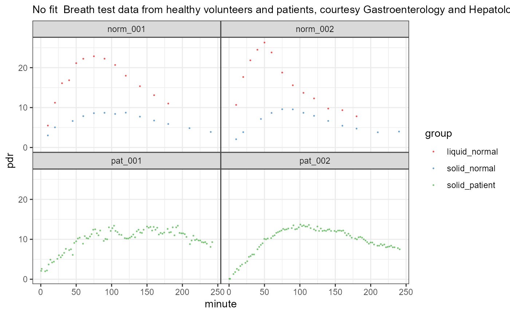

13C time series PDR data from normals and random patients from the division of Gastroenterology and Hepatology, University Hospital Zurich. Most breath samples from normals were collected with bags and analyzed by IRIS/Wagner infrared spectroscopy. Patient samples were recorded with the continuous monitoring system BreathID.
- patient_id
Patient identifier, starting with
normfor normals (healthy volunteers) andpatfor patients. Note that for normals there are two records for each subject, so only the combination of patient_id and group is a unique identifier of the time series record.- group
liquid_normalfor normals and liquid meal,solid_normalnormals and solid meal, andpatientfor patients from the University Hospital of Zurich.- minute
Time in minutes
- pdr
PDR as computed by breathtest device or from dob via function dob_to_pdr
Usage
data(usz_13c)Examples
data(usz_13c)
if (FALSE) { # \dontrun{
str(usz_13c)
# Plot all records; this needs some time
pdf(file.path(tempdir(), "usz_13c.pdf"), height= 30)
# null_fit makes data plotable without fitting a model
plot(null_fit(usz_13c))
dev.off()
} # }
# Plot a subset
suppressPackageStartupMessages(library(dplyr))
usz_part = usz_13c %>%
filter(patient_id %in% c("norm_001","norm_002", "pat_001", "pat_002"))
plot(null_fit(usz_part))
